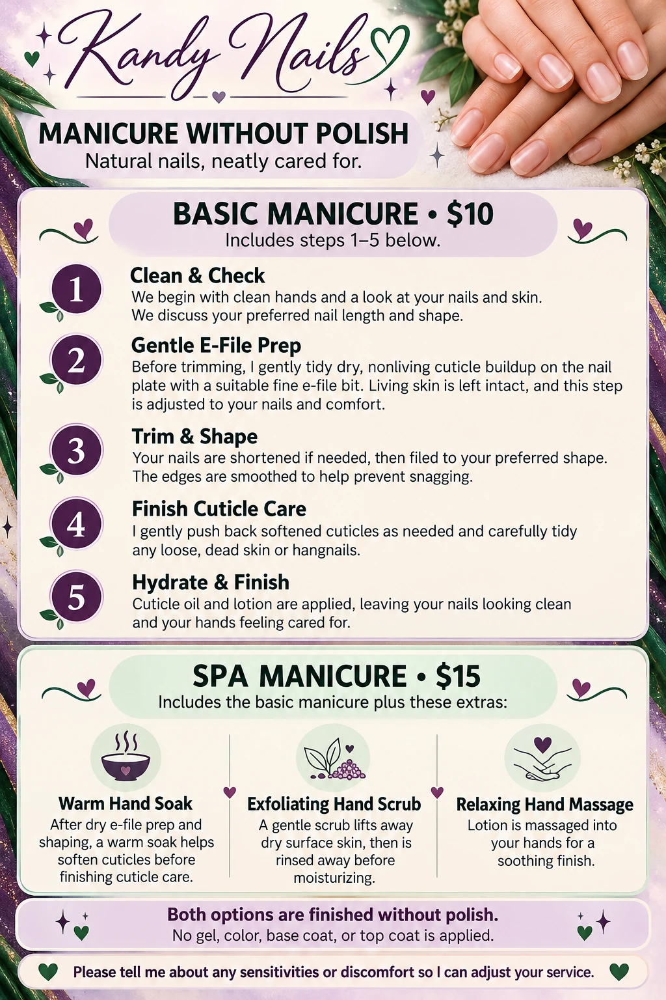
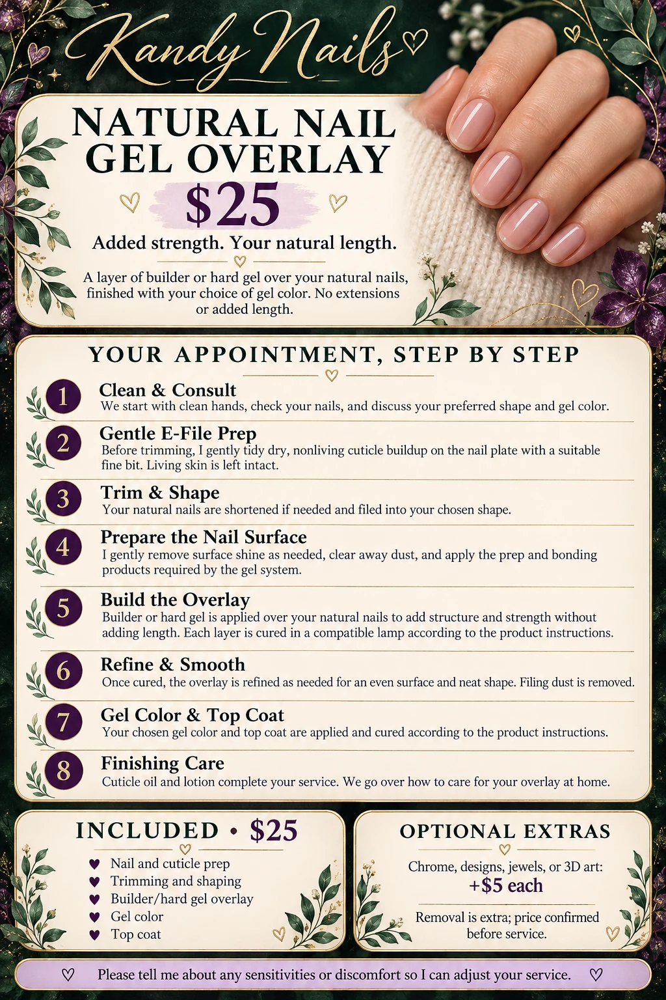
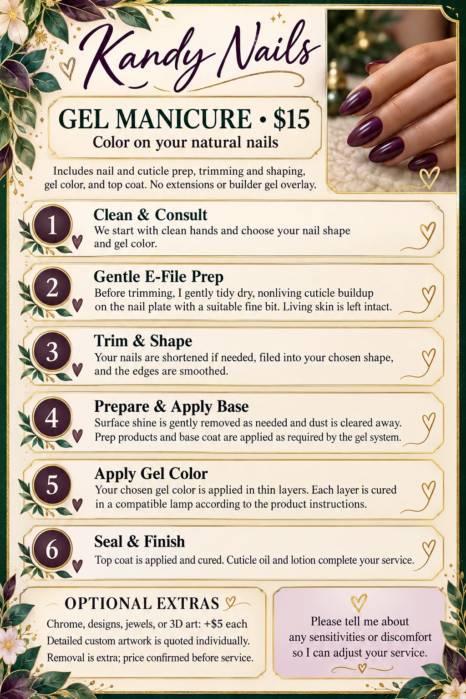
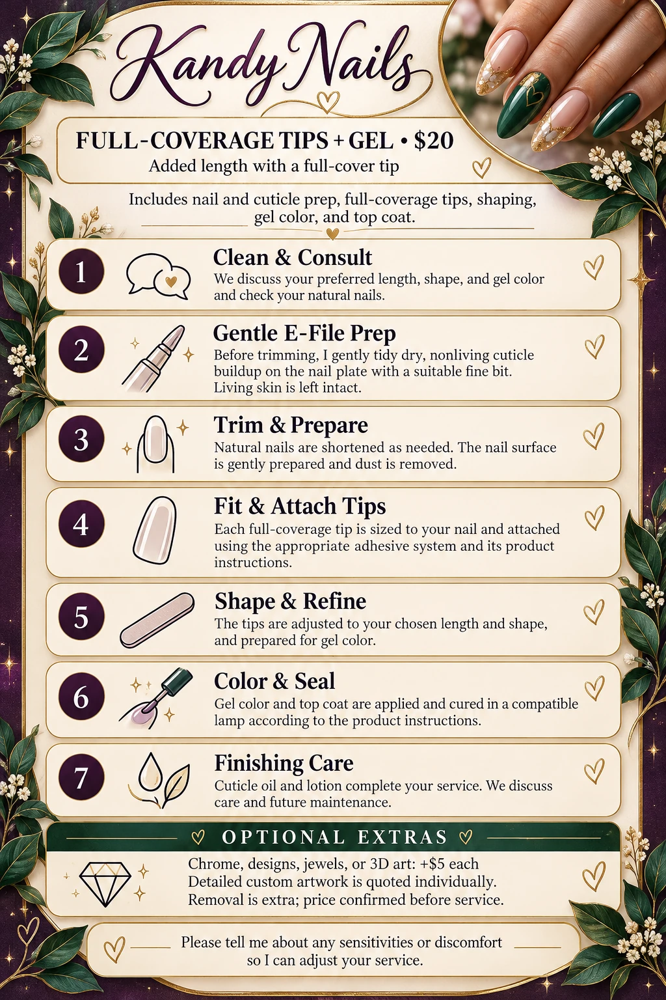
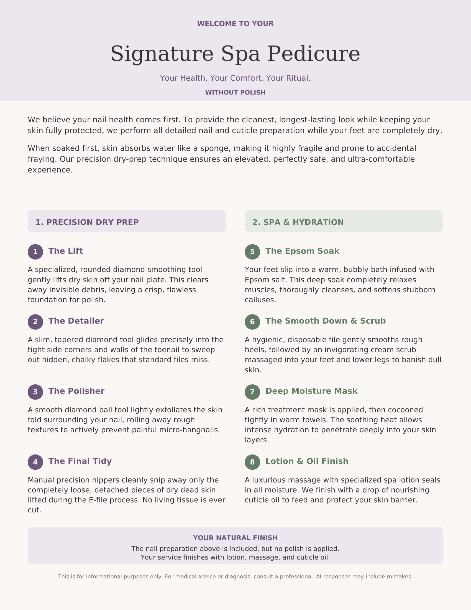
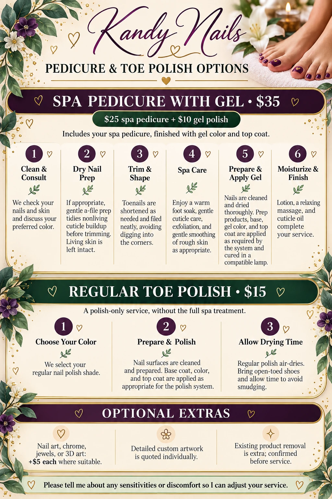

Manicure Without Polish
$10 basic · $15 spa
Neat natural nails, finished with oil and lotion. The spa option adds a warm soak, scrub, and massage.
View steps & picture guide
- Clean and consult
- Gentle dry e-file prep before trimming
- Trim and shape
- Finish cuticle care
- Apply cuticle oil and lotion

Open full-size guide ↗Save picture ↓
Natural Nail Gel Overlay
$25
Builder or hard gel over your natural nails, with gel color and top coat. No added length.
View steps & picture guide
- Clean and consult
- Gentle dry e-file prep before trimming
- Trim and shape
- Prepare the nail surface
- Build and cure the overlay
- Refine and smooth
- Apply gel color and top coat
- Finish with oil, lotion, and care advice

Open full-size guide ↗Save picture ↓
Gel Manicure
$15
Gel color on your natural nails, including prep, shaping, and top coat.
View steps & picture guide
- Clean and choose your shape and color
- Gentle dry e-file prep before trimming
- Trim and shape
- Prepare the nail and apply base as required
- Apply and cure gel color
- Apply and cure top coat; finish with oil and lotion

Open full-size guide ↗Save picture ↓
Full-Coverage Tips + Gel
$20
A full-cover tip adds length, finished with shaping, gel color, and top coat.
View steps & picture guide
- Consult on length, shape, and color
- Gentle dry e-file prep before trimming
- Trim and prepare natural nails
- Size and attach full-coverage tips
- Shape and refine
- Apply and cure gel color and top coat
- Finish with oil, lotion, and care advice

Open full-size guide ↗Save picture ↓
Acrylic or Hard Gel Extensions
$30
Added length built with acrylic or hard gel, finished with gel color and top coat.
View steps & picture guide
- Clean and consult
- Gentle dry e-file prep before trimming
- Trim and prepare
- Fit tips and add length
- Build with acrylic and allow to set, or build with hard gel and cure
- File and refine
- Apply and cure gel color and top coat; finish with oil and lotion

Open full-size guide ↗Save picture ↓
Spa Pedicure Without Polish
$25
Dry nail and cuticle preparation followed by a soak, scrub, moisture mask, and lotion and oil finish.
View steps & picture guide
- Precision dry preparation
- Tidy loose, detached dead skin
- Warm Epsom salt foot soak
- Gentle heel smoothing and cream scrub
- Moisture mask and warm towels
- Lotion massage and cuticle oil; no polish

Open full-size guide ↗Save picture ↓
Pedicure & Toe Polish
$35 spa + gel · $15 regular polish
Spa pedicure with gel is $25 + $10. Regular toe polish is a polish-only service.
View steps & picture guide
- Spa + gel: consult, dry nail prep before trimming, trim and shape, spa care, prepare and apply gel, moisturize and finish
- Regular toe polish: choose color, prepare and polish, allow air-drying time

Open full-size guide ↗Save picture ↓